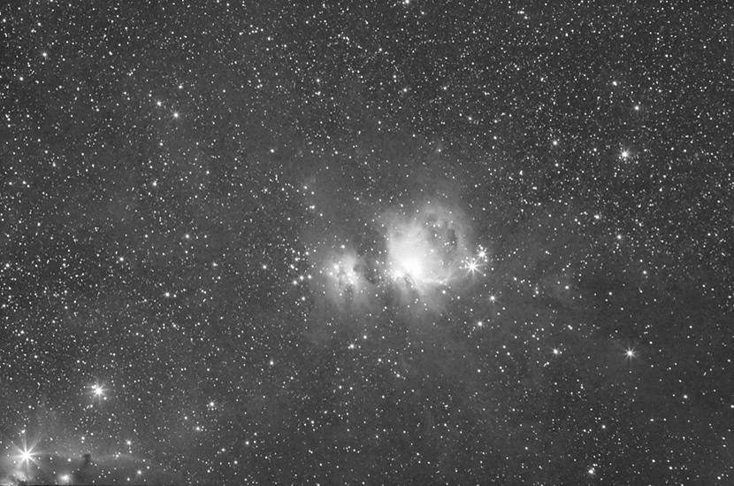

M42 and Horse Head Nebula 猎户座大星云与马头暗星云 （黑白）
马头星云是地球天空中最著名的星云之一，它是上面影像中左下方那片红色发射星云上的黝黑区块。它左方明亮的恒星则是著名猎户座腰带三星之一。这片马头形的区域会如此黝黑，源自它是片位在明亮红色发射星云前方的不透光尘埃云。类似地球大气中的云朵，这团宇宙云恰好有个我们很熟悉的外观。再经过数千年后，星云内部的变动会改变星云的外观。
拍摄器材和参数：Canon L 70-200mm(200mm) F5.6 ；Vixen GP 赤道仪；Canon 400D；ISO800，Total Exposure 2hours(15min*8)；人工导星
作者：祝尔康。摄于浙江省安吉县天荒坪，2008年1月6日。